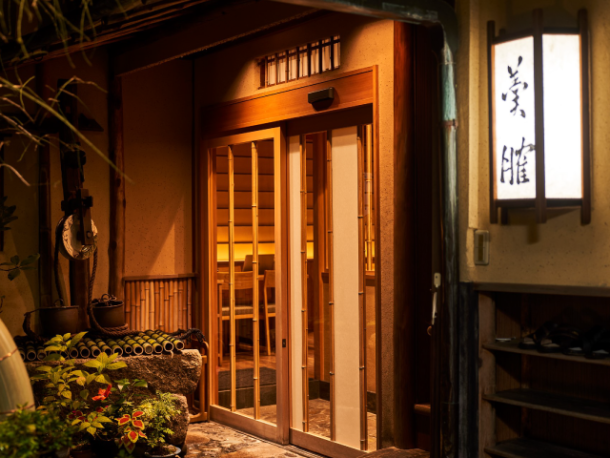
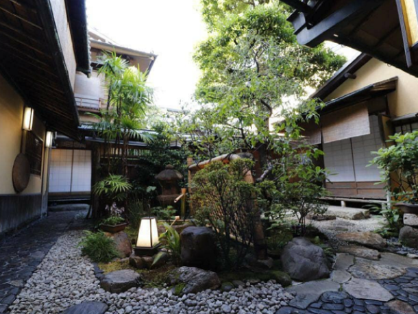
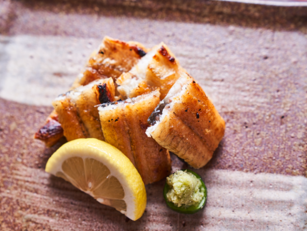
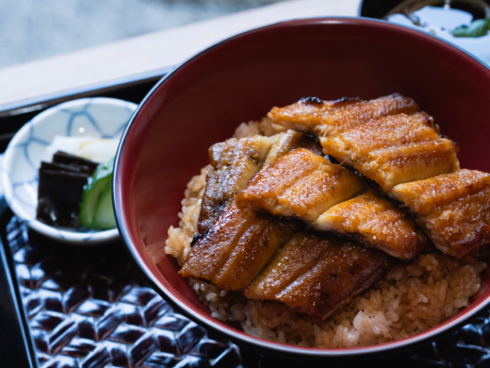
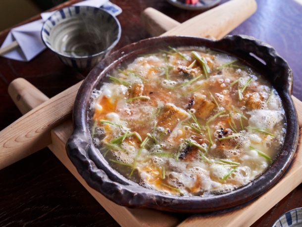

最新の情報は 公式サイトのツアーページ をご覧ください。
好きな京都を、好きなように。智積院と老舗「わらじや」で楽しむ大人の半日旅
本ツアーの募集は終了いたしました
＜お問合せフォームはこちら▶＞
＜MKトラベルTOPはこちら▶＞
＜おすすめツアー一覧はこちら▶＞
旅行代金（1名様あたり／税込）
| 2～3名/1台 | 22,000円 |
| 4～5名/1台 | 17,000円 |
| 6～9名/1台 | 16,000円 |
「せっかく京都に来たなら、行きたいところを自分たちのペースで楽しみたい」
そんな大人のための、貸切タクシーでめぐる京都の半日旅です。
午前中は、京都市内のお好きな場所へご案内するフリー観光からスタート。
気になっていた神社やお寺、久しぶりに訪れたい場所など、その日の気分に合わせて自由にお楽しみいただけます。
その後は、静かな時間が流れる智積院へ。
美しい庭園を眺めながら、喧騒を離れてゆったりと京都の風情を感じるひとときを。
そして旅の締めくくりは、京都の老舗「うなぎ料理 わらじや」で、京都ならではの鰻料理を味わう特別なランチタイム。
今回のランチは、MKトラベルのためにご用意いただいた特別コース。
わらじやの名物「うぞふすい」を楽しむコースや、鰻料理を存分に味わうコースなど、3種類の特別コースからお好みに合わせてお選びいただけます。
名物「うぞふすい」は、鰻とご飯をだしのきいたおつゆでいただく、鰻の旨みとやさしいだしの味わいを楽しめる、わらじやならではの伝統の一品です。
歴史を感じる京都らしい趣のある空間で、京都の食文化と町家情緒を感じながら、ゆったりとランチをお楽しみいただけます。
行きたい場所も、過ごし方も、みんなで相談しながら。
貸切タクシーだからこそ叶う、自由で心地よい「大人の京都」。
お気に入りの場所を訪れ、庭園で心をほどき、最後は老舗の味に舌鼓。
そんな、ちょっと贅沢な京都の半日をお楽しみください。
| おすすめポイント |
| ・行きたい場所を選んで、自分たちらしい京都観光を楽しめます。 ・人数だからこそ、周りを気にせず自分たちのペースで京都を満喫。 ・美しい庭園が魅力の智積院へ。喧騒を離れ、京都らしい風情を感じながらゆっくり散策。 ・老舗「うなぎ料理 わらじや」で特別な鰻ランチ 名物「うぞふすい」など、3種類のMKトラベル特別コースからお好みで選べます。 |
行程
| 時間 | 場所 |
| 9:00 | 京都駅市内 ご指定の場所 |
| ↓ | 京都市内エリア |
| 10:45 | 智積院 |
| 11:30 | うなぎ料理 わらじや |
| 13:30頃 | 京都市内 ご指定の場所 |
※渋滞等で、予定通りの滞在時間をお取りすることができない場合がございます。予めご了承ください。
◆送迎エリア：京都市のみ
※京都市の次のエリアは本件対象外とさせていただきます。
・北区中川・小野・杉阪・真弓・大森・雲ヶ畑
・右京区京北・嵯峨清滝・嵯峨水尾・嵯峨越畑・嵯峨樒原
・左京区花脊・広河原・久多・大原
※フリーコースとなりますので、拝観料・駐車料・通行料等は含まれておりません。
うなぎ料理 わらじや
-

-

食事内容
| ①うぞふすい・まむしプラン（基本コース） わらじや名物「うぞふすい」と、白焼き・まむし御膳を楽しむ、わらじやの味を満喫できるおすすめコース。 |
| ②太閤ランチ・うぞふすいプラン（＋500円/1人） 名物「うぞふすい」と白焼きを楽しむ、わらじやならではの味わいを堪能できるコース。 |
| ③まむしプラン（＋1,000円/1人） 白焼きとまむし御膳を中心に、鰻料理を存分に味わいたい方におすすめのコース。 |
※①が基本コースとなります。②③をお選びの場合は、上記の追加料金がかかります。


鰻料理 イメージ

わらじや名物「うぞふすい」
【MKトラベルLINE公式アカウント】
MKトラベルの新規ツアー情報をLINEでお届けいたします

【各SNSでも京都の情報やツアー情報をお届けしています】


旅行条件
| ツアー番号 | T0809MK |
| 出発地 | 京都市内 |
| 添乗員／ガイド | 添乗員：なし（乗務員がその業務を代行いたします） |
| 食事 | 1回 |
| 最少催行人数 | 2名 |
お申込みについてのご注意
※最少催行人数は2名様です。
※旅行条件・旅行代金は、2026年8月1日現在を基準としています。
※行程および帰着時間は交通事情などにより変更になる場合があります。
※お申込みの前に弊社の募集型企画旅行規約をご確認ください。
よくある質問
Q.こちらはレンタカーで京都を観光するプランですか？
A.いいえ。運転はハイヤー経験豊富な乗務員が担当し、丁寧かつ洗練されたサービスでお客様の京都観光をサポートいたします。
Q.大人数ですが、申し込みできますか？
A.はい。9名様でご乗車いただける大型車もご用意しております。
Q. 2名だけでも参加できますか？
A.2名様から運行可能です。
Q.1名ですが、申し込みできますか？
A.貸切で再現できる場合もございますのでご相談ください。お問合せフォームはこちら
Q.参加したかったけど、募集が終了していました
A.貸切で再現できる場合もございますのでご相談ください。お問合せフォームはこちら
Q. 旅行代金には何が含まれていますか？
A.送迎の料金はもちろん、90分のフリー観光、うなぎ料理 わらじやでのお食事代が含まれております。
（お料理の一部プランは追加料金あり）
Q. 「わらじや」ではどのような料理を楽しめますか？
A.日本らしい、落ち着いた「和」の空間で、老舗のうなぎ料理をお楽しみいただけます。
3種類のMKトラベル特別コースをご用意しておりますので、お好きなコースを選択可能です。
①うぞふすい・まむしプラン、②太閤ランチ・うぞふすいプランに含まれる名物「うぞふすい」は鰻の白焼きとお餅、ごぼう、椎茸、人参、卵や三つ葉が入ったお出しの効いた雑炊です。
③まむしプランでは蒸さずにじっくり焼き上げた白焼きや秘伝のタレで焼き上げたまむし御膳など、鰻を存分に楽しめるプランになっております。
Q. 智積院では自由に拝観できますか？
A.はい。自分のペースでお楽しみいただけます。
Q. 通常の観光タクシーとの違いは何ですか？
A.MKのタクシーツアーの多くは乗合制となっておりますが、こちらのツアーは貸切での運行となります。
また、京都エリアのフリー観光がついておりますため、お客様の行ってみたかった場所や気になる場所など、ご希望のスポットへお連れいたします。移動中もお知り合いのみでゆったりとお過ごしいただけます。
本ツアーの募集は終了いたしました
＜お問合せフォームはこちら▶＞
＜MKトラベルTOPはこちら▶＞
＜おすすめツアー一覧はこちら▶＞
【お電話・ご来店でのご予約の場合】
・店頭にてお支払【WEBシステムよりご予約の場合】
・クレジットカード決済
・コンビニ決済
・TACPO
お支払方法詳細はこちら
お客様のご都合でご予約をキャンセルされる場合は、すみやかに下記お問合せ先までご連絡ください。
キャンセル料
11日目に当たる日以前
無料
10日目に当たる日以降
20%
7日目に当たる日以降
30%
旅行開始日の前日
40%
旅行開始日の当日
50%
旅行開始後又は無連絡
100%